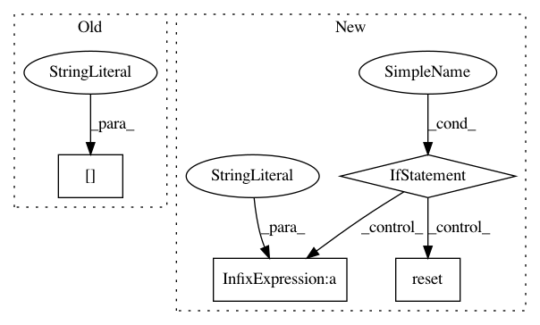

49efa4a7260be8ed44986ad93fd3594391865c09,anvio/genomedescriptions.py,GenomeDescriptions,get_genome_hash_for_external_genome,#GenomeDescriptions#Any#,318
Before Change
def get_genome_hash_for_external_genome(self, entry):
utils.is_contigs_db(entry["contigs_db_path"])
contigs_db = dbops.ContigsDatabase(entry["contigs_db_path"])
genome_hash = contigs_db.meta["contigs_db_hash"]
contigs_db.disconnect()
return genome_hash
After Change
self.is_proper_db(entry["contigs_db_path"], db_type="contigs")
genome_hash = db.DB(entry["contigs_db_path"], None, ignore_version=True).get_meta_value("contigs_db_hash")
if genome_hash in self.genome_hash_to_genome_name:
self.progress.reset()
raise ConfigError("While working on your external genomes, anvi"o realized that genome %s and %s seem to have the same hash. "
"If you are certain these genomes represent two different genomes, please re-run the program, and if they appear "
"again please let the developers know about the problem." % (self.genome_hash_to_genome_name[genome_hash], entry["name"]))
return genome_hash
def get_genome_hash_for_internal_genome(self, entry):
In pattern: SUPERPATTERN
Frequency: 3
Non-data size: 4
Instances
Project Name: merenlab/anvio
Commit Name: 49efa4a7260be8ed44986ad93fd3594391865c09
Time: 2020-03-22
Author: a.murat.eren@gmail.com
File Name: anvio/genomedescriptions.py
Class Name: GenomeDescriptions
Method Name: get_genome_hash_for_external_genome
Project Name: merenlab/anvio
Commit Name: 49efa4a7260be8ed44986ad93fd3594391865c09
Time: 2020-03-22
Author: a.murat.eren@gmail.com
File Name: anvio/genomedescriptions.py
Class Name: GenomeDescriptions
Method Name: get_genome_hash_for_internal_genome
Project Name: asyml/texar
Commit Name: 3afebc947eb58c0c62af6d3fa867fcd4dca5abca
Time: 2018-04-04
Author: zichaoy@cs.cmu.edu
File Name: examples/tsf/tsf_trainer.py
Class Name: TSFTrainer
Method Name: train